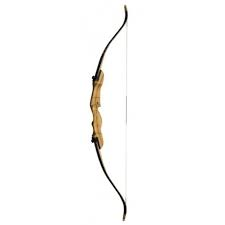

Jak prawidłowo strzelać z łuku
Łucznictwo tradycyjne to sztuka posługiwania się repliką bądź rekonstrukcją łuku historycznego, wyglądem oraz charakterystyką zbliżoną do zachowanych egzemplarzy historycznych przy użyciu dawnych technik strzeleckich. W łucznictwie tradycyjnym można wyróżnić dwa style strzelania: przy użyciu techniki śródziemnomorskiej, jak w łucznictwie sportowym, oraz przy użyciu pierścienia łuczniczego, tzw. zekiera. Osobną formą łucznictwa tradycyjnego jest łucznictwo konne. Z łucznictwa tradycyjnego w XIX wieku wyewoluowało łucznictwo sportowe i w takiej formie obecnie reprezentowane jest na igrzyskach olimpijskich.
